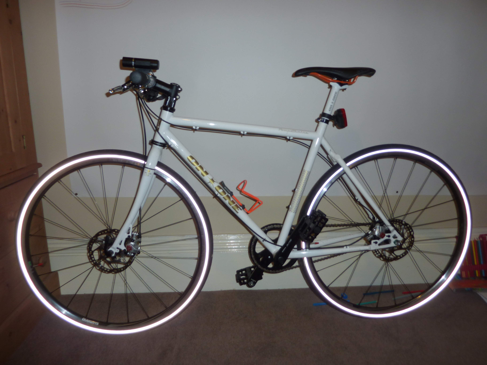
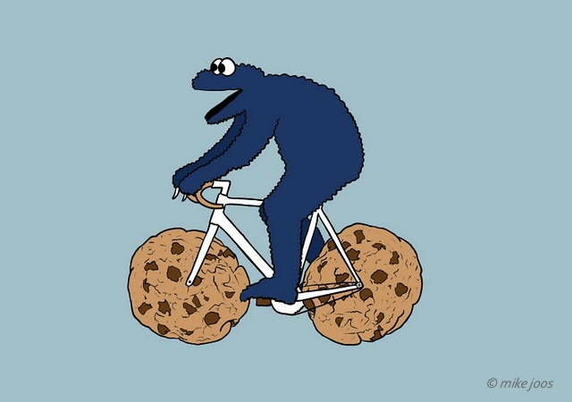

class: center, middle # The White Bike ### a.k.a. On-One Pompetamine Alfine 8 #### a.k.a. Doug's bike --- # Prelude - Started biking a lot at Uni, 2011 - OK bike gifted to me by neighbor - Lots of gear/brake issues and fixing - Eventually got stolen :( --- # A new bike - Needed another bike - In 2014 I would commute by bike ~20 Km per day - Time to get a 'good bike' (i.e. decent components, disc brakes, hub gear) - I considered building my own - I did a *lot* of research - I found a bike with the things I wanted cheaper than I could make it - I bought an 'On-One Pompetamine Alfine 8' for for £600 in April 2013 --- # When it was newww...  --- # History ### 2013 - 2015 Heavy, daily riding. I did a lot of maintainance and got to know the bike very well: it pretty much became an extension of my body :) ### 2015 - 2017 Bike was mostly in storage while I was yunity-ing :( ### 2017 Brought to Kanthaus... --- # Depersonalization ### Good: - Bike became regularly used by many people because of good condition - Nick bike trailer hitch attached - Regularly used for dumpser diving ### Not so good - Bike light went missing - Seat post regularly not at my height - Lock/key often in different places - I cannot reliably 'grab' the bike - Missing component (brake cap) not replaced - Demotivating to do maintainance. - Use conflict with community re dumpster diving --- ## Two separate issues - Community desire to have decent bike/trailer for dumpster diving. - My desire to have a decent bike in a predictable state that I can take without discussion. <!-- ## Options to solve both issues 'easily' - We move the hitch to another bike and I personalize the white bike more - We buy another hitch for another bike and I personalize the white bike more - We keep the hitch on the white bike and I personalize another one --> --- # Discuss 